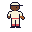

GAMEPLAY STORYBOARD
The Say Hey Dash · Milestone 1 · 10 beats covering all 7 required screens and the 3 gameplay stages. Placeholder art; compositions are indicative and will be validated in the M2 greybox.
FLOW: 01 TITLE → 02 MISSION → 03 GAMEPLAY [A TRACK → B CATCH] → 04 CATCH SEQUENCE → 03 GAMEPLAY [C THROW] → 06 COMPLETE → 07 REPLAY · any miss → 05 FAILED → retry (03)
01 · TITLE / PRESS STARTScreen 01
FASTBALL FUEL COFFEE COMPANY PRESENTS
[ARCADE MODE]
THE CATCH
PLAYER ONE: WILLIE MAYS
WORLD SERIES: 1954
LEVEL 01: POLO GROUNDS
WORLD SERIES: 1954
LEVEL 01: POLO GROUNDS
▶ PRESS START ◀
SOUND: ON · CREDITS · ASSISTED MODE: OFF
Input: Enter / Space / tap. Motion: prompt blinks at 1 Hz (static in reduced motion). Sound toggle + credits reachable by keyboard and touch. Name line subject to licensing (Q1).
02 · MISSION OBJECTIVEScreen 02
MISSION OBJECTIVE
YEAR: 1954
LOCATION: POLO GROUNDS
INNING: TOP 8 · SCORE: 2–2 · OUTS: 0
RUNNERS: 1ST & 2ND
LOCATION: POLO GROUNDS
INNING: TOP 8 · SCORE: 2–2 · OUTS: 0
RUNNERS: 1ST & 2ND
OBJECTIVE: MAKE THE CATCH. MAKE THE THROW.
MOVE: ARROWS/WASD · CATCH/THROW: SPACE · PAUSE: ESC
CONTINUE ▶ SKIP INTRO ▶▶
Brief, approved historical setup (typewriter reveal, instantly completable). Skippable per accessibility list. Controls shown for the active device (keys or touch icons).
03a · THE HITScreen 03 · intro beat

CRACK!
DEEP FLY BALL TO CENTER!
≈1.5 s non-interactive beat: bat-crack SFX, crowd swell, ball launches from behind the camera. Camera holds on centre field. Sets the deterministic, scripted trajectory (no random events — GDD fairness).
03b · STAGE A — TRACK THE BALLScreen 03

❚❚
TRACK THE BALL!
Mechanic: movement & positioning. Player runs toward the wall. Ball shadow + dashed ring = landing indicator (shape cue, not just colour). Pause icon top-right. Mobile: stick bottom-left, action bottom-right. Tunables:
playerRunSpeed, landingZoneRadius, ballFlightDuration.03c · STAGE B — MAKE THE CATCHScreen 03
NOW! [SPACE]
IN ZONE ✓
Mechanic: reaction timing. Inside the catch zone the cue appears; press Action within
catchWindowSeconds (wider in Assisted mode). Too early / late / out of zone → 05. Text cue + icon, not colour alone.04 · CATCH SEQUENCEScreen 04
OVER THE SHOULDER!
PRESS SPACE TO SKIP
Original over-the-shoulder catch animation, brief zoom/hold to emphasise the play, then immediately into the throw. Skippable; in reduced-motion mode it's shortened to the key pose (no zoom).
03d · STAGE C — MAKE THE THROWScreen 03
SPIN AND THROW!
TARGET: INFIELD CUTOFF
PRESS SPACE IN THE ZONE
Mechanic: precision timing. Player turns to the infield; a needle sweeps a meter; press Action while it's inside the target zone (notched edges = non-colour cue). Tunables:
throwMeterSpeed, throwTargetZoneWidth.05 · MISSION FAILEDScreen 05
TRY AGAIN
BALL MISSED
HINT: FOLLOW THE SHADOW — BE INSIDE THE RING BEFORE YOU PRESS.
RETRY MISSION? ▶
Framed strictly as a retry, never as what happened historically. Message = BALL MISSED or THROW MISSED; short contextual hint; unlimited retries, no lives. Restart is one press.
06 · MISSION COMPLETEScreen 06
MISSION COMPLETE
THE CATCH · SEPTEMBER 29, 1954
POSITION 360 · TIMING 255 · THROW 300
SCORE 915 · ★★★ LEGENDARY
LEAD RUNNER HOLDS AT THIRD — NO RUN SCORES
REPLAY ▶ REPLAY MODE ▶
Shows the documented outcome (runner to third, the Giants keep it tied). Score breakdown + rank with stars and text. Buttons: Replay mission, Continue to Replay Mode.
07 · REPLAY / HISTORYScreen 07
THE REAL CATCH
POLO GROUNDS, NYC
SEPT 29, 1954
[CLIENT-APPROVED
RECAP TEXT]
POLO GROUNDS, NYC
SEPT 29, 1954
[CLIENT-APPROVED
RECAP TEXT]
◀ MUSEUM / STORY MODE
Short approved recap + simplified animated replay drawn with the game's own sprites (no archival footage). Link to the Fastball Fuel museum / STORY MODE page (opened safely from the iframe — tested in M1). Back to title.